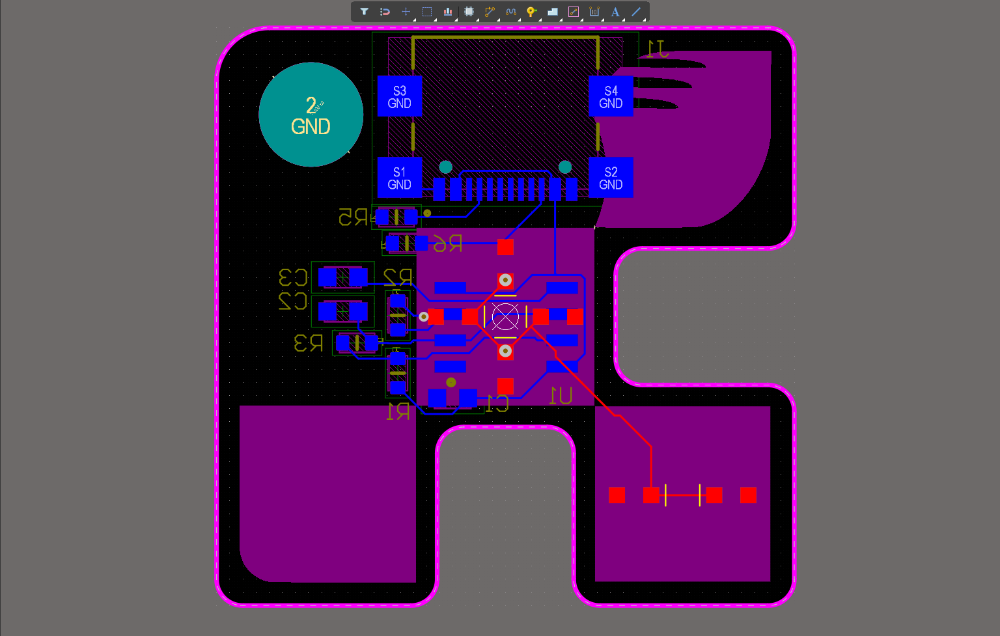

Discovery Project Feature & Technical Portfolio
The heart of my ePortfolio—featuring an in-depth technical case study of my Custom USB-C LM555 Astable LED Driver PCB followed by a scalable archive of my embedded C++ firmware, vehicle hardware, and electromechanical builds.
Custom USB Type-C LM555 Astable Oscillator & Six-Channel SMD LED Driver PCB
The Problem: Fragile Breadboard Clocks & Unstandardized Schematic Libraries
In complex electrical systems—such as Formula SAE Electric vehicle sub-assemblies on Georgia Tech’s HyTech Racing or standalone lab test fixtures—engineers frequently need a deterministic, hardware-timed square-wave oscillator and visual status array that operates independently of microcontroller software execution. When built on solderless breadboards using through-hole components and loose jumper wires, analog timing circuits suffer from stray parasitic capacitance, intermittent contact resistance, and mechanical failure under vibration. Additionally, powering benchtop prototypes from bulky bench supplies limits portability compared to a universal 5V USB Type-C power interface.
Beyond physical fragility, many early-stage PCB designs fail during manufacturing or bring-up due to inconsistent CAD library management—such as mismatched pin mappings, unverified surface-mount land patterns, or cluttered schematics. For my Discovery Project, I set out to engineer a compact, manufacturable USB Type-C powered LM555 astable oscillator PCB driving six surface-mount LEDs in Altium Designer, establishing a rigorous, repeatable hardware workflow from custom library creation to Design Rule Check (DRC) verification.
The Process: Custom Altium Libraries, RC Waveform Math & 0603 SMD Routing
Following a structured hardware engineering workflow, I divided the project into three stages: Standardized CAD Library Engineering, Astable Timing & USB-C Power Architecture, and Multi-Layer PCB Layout & DRC Verification.
In Stage 1, I built custom schematic symbols and IPC-compliant PCB footprints in Altium Designer rather than relying on unverified third-party libraries. Every custom symbol was constructed to strict drafting standards: 200 mil pin lengths, 100 mil minimum pin spacing, thematic pin grouping (power supply pins placed in the top-left, ground pins in the bottom-right), and explicit active-low overbar notation (R\E\S\E\T\) on the LM555 timer IC. I also embedded structured component parameter fields (manufacturer part numbers, tolerances, dielectric ratings, and package codes) directly into each library part for automated Bill of Materials (BOM) generation.
In Stage 2, I designed the power and timing schematic. I configured a USB Type-C receptacle with dedicated 5.1kΩ pull-down resistors on the CC1 and CC2 configuration channel pins so upstream USB-C sources reliably negotiate a 5V VBUS supply. I then calculated the charging and discharging RC time constants (tH = 0.693(R_1 + R_2)C$ and tL = 0.693 R_2 C) around the LM555 timer in astable mode, selecting 0603 surface-mount chip resistors and multi-layer ceramic capacitors (MLCCs) alongside a 100nF bypass capacitor on the control/supply rails to suppress switching transients. The output stage was engineered to drive six parallel branches of Kingbright APT1608SYCK-J3-PRV yellow 0603 SMD LEDs with individual current-limiting resistors.
In Stage 3, I placed and routed the board in Altium’s PCB editor. I positioned the decoupling capacitor immediately adjacent to the LM555 VCC pin, arranged the six Kingbright LEDs symmetrically for clear visual diagnostics, widened the 5V power traces to minimize resistive drop, and poured a continuous copper ground plane stitched with vias to ensure a low-inductance return path.
The Outcome: Zero-Error DRC Layout & Foundation for Vehicle Hardware
The final PCB design passed all automated Design Rule Checks (DRC) in Altium Designer with zero clearance, short-circuit, or unrouted-net violations, shrinking a cluttered breadboard circuit into a sleek, pocket-sized 0603 surface-mount assembly ready for Gerber export and fabrication. The RC timing network and decoupling architecture produce a clean, deterministic square-wave output signal that drives all six yellow SMD LEDs at uniform brightness from any standard USB Type-C cable.
Most importantly, this Discovery Project established the exact Altium Designer discipline—custom symbol/footprint verification, 0603/0402 passive selection, and signal/power integrity layout—that I now use on HyTech Racing and will carry into my Circuit Technology and Signal & Information Processing coursework, Georgia Tech VIP research, and future hardware engineering internships.
Click the tabs below to inspect my Altium PCB layout, custom schematic capture, hardware prototype view, and optional video demonstration.

CREATED IN ALTIUM DESIGNER BY BRYAN LINCaption: Custom PCB layout routed in Altium Designer featuring USB Type-C power input, the LM555 astable oscillator, 0603 SMD passives, and six Kingbright yellow LEDs.

Discovery Project Engineering Summary
5 DISCOVERY SHOWCASE QUESTIONS ADDRESSED:
- ✓ Q1 (Project Goal): Compact USB-C hardware clock & standardized Altium library workflow.
- ✓ Q2 (Design Process): Custom symbols/footprints → RC calculations → 2-layer SMD routing.
- ✓ Q3 (Technical Challenges): Enforced 200/100 mil symbol rules, USB-C CC pull-downs & ground pour.
- ✓ Q4 (Measurable Results): Zero-error DRC verification & uniform 6-channel SMD LED drive.
- ✓ Q5 (Next Steps @ GT): Scaling PCB layout standards to HyTech Racing, VIP & internships.
Additional Hardware, PCB & Embedded Projects
Filter by engineering domain or click "Read Full Case Study" on any card to view its Problem / Process / Outcome write-up.